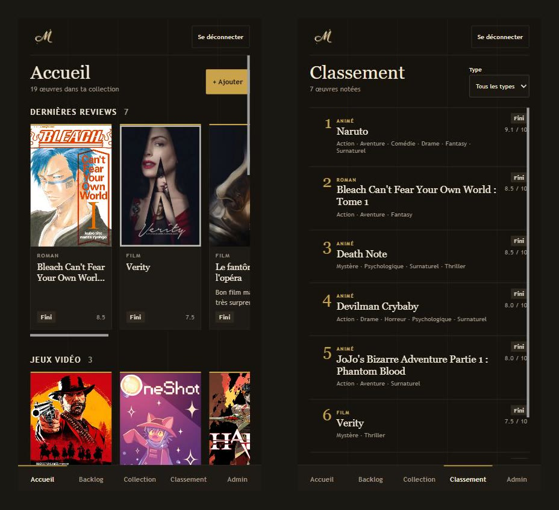

Projet personnel · application web
Mada
Une application web pour suivre ses jeux vidéo, séries, films, animés et livres. Elle s'installe sur téléphone comme une vraie application (PWA).
- Comptes utilisateurs : connexion par pseudo grâce à une fonction côté serveur.
- Base de données PostgreSQL protégée par la sécurité RLS : chacun ne voit que ses données.
- Rôle administrateur vérifié côté serveur.
- Mise en ligne automatique sur Vercel à chaque push (~40 commits).
Il faut créer un compte pour tester l'application.